Computer vision with PyTorch (Dense && Convolutional layers)
Task
use image classification tasks to learn about convolutional neural networks, and then see how pre-trained networks and transfer learning can improve our models and solve real-world problems.
Introduction to image data
In computer vision, we normally solve one of the following problems:
- Image Classification the simplest task, when we need to classify an image into one of many pre-defined categories, for example, distinguish a cat from a dog on a photograph, or recognize a handwritten digit.
- Object Detection a bit more difficult task, in which we need to find known objects on the picture and localize them, i.e. return the bounding box for each of recognized objects.
- Segmentation similar to object detection, but instead of giving bounding box we need to return an exact pixel map outlining each of the recognized objects.

Multi-dimensional arrays are also called tensors. Using tensors to represent images also has an advantage, because we can use an extra dimension to store a sequence of images. For example, to represent a video fragment consisting of 200 frames with 800x600 dimension, we may use the tensor of size 200x3x600x800.
Import packages and load the MNIST Dataset
we are using the well-known MNIST dataset of handwritten digits, available through torchvison.datasets.MNIST in PyTorch. The dataset object returns the data in the form of Python Imagine Library (PIL) images, which we convert to tensors by passing a transform=ToTensor() parameter.
1 | import torch |
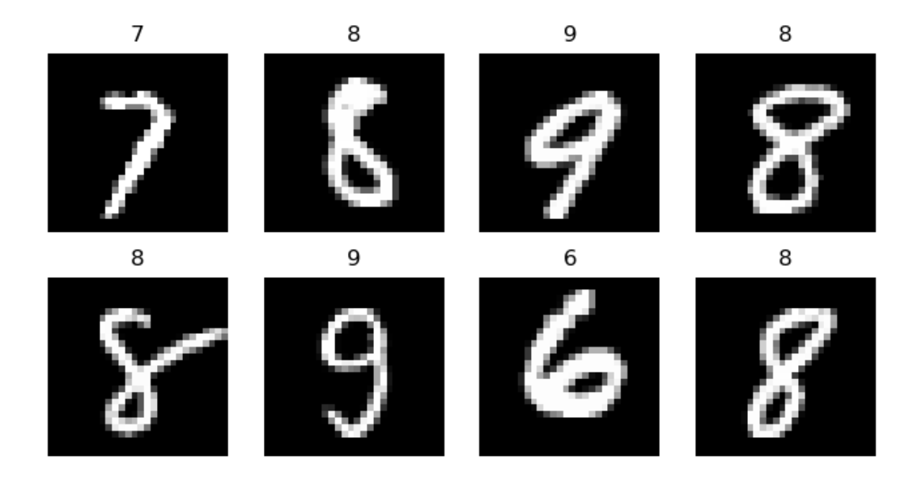
If you are planning to load your own images, it is important to make sure that all values are scaled to the range 0 - 1 before we start training a neural network.
Training a dense neural network
The handwritten digit recognition is a classification problem. We will start with the simplest possible approach for image classification - a fully-connected neural network (which is also called a perceptron).
Fully-connected dense neural networks
A basic neural network in PyTorch consists of a number of layers. The simplest network would include just one fully-connected layer, which is called Linear layer, with 784 inputs (one input for each pixel of the input image) and 10 outputs (one output for each class).
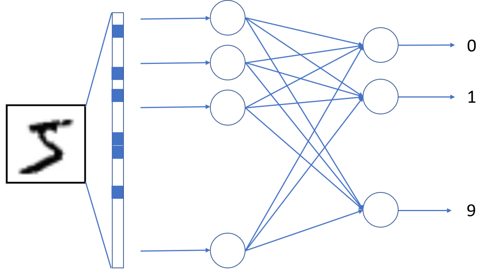
the dimension of our digit images is 1×28×281×28×28. Because the input dimension of a fully-connected layer is 784, we need to insert another layer into the network, called Flatten, to change tensor shape from 1×28×281×28×28 to 784784.
We want nn-th output of the network to return the probability of the input digit being equal to nn. Because the output of a fully-connected layer is not normalized to be between 0 and 1, it cannot be thought of as probability. To turn it into a probability we need to apply another layer called Softmax.
In PyTorch, it is easier to use LogSoftmax function, which will also compute logarithms of output probabilities. To turn the output vector into the actual probabilities, we need to take torch.exp of the output.
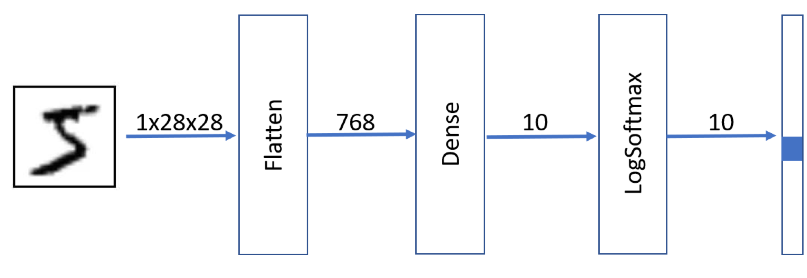
1 | net = nn.Sequential( |
Training the network
The training process steps are as follows:
- We take a minibatch from the input dataset, which consists of input data (features) and expected result (label).
- We calculate the predicted result for this minibatch.
- The difference between this result and expected result is calculated using a special function called the loss function
- We calculate the gradients of this loss function with respect to model weights (parameters), which are then used to adjust the weights to optimize the performance of the network. The amount of adjustment is controlled by a parameter called learning rate, and the details of optimization algorithm are defined in the optimizer object.
- We repeat those steps until the whole dataset is processed. One complete pass through the dataset is called an epoch.
1 | def train_epoch(self, epoch, lr=1e-2, optimizer=None): |
- Switch the network to training mode (
net.train()) - Go over all batches in the dataset, and for each batch do the following:
- compute predictions made by the network on this batch (
out) - compute
loss, which is the discrepancy between predicted and expected values - try to minimize the loss by adjusting weights of the network (
optimizer.step()) - compute the number of correctly predicted cases (accuracy)
- compute predictions made by the network on this batch (
visualize history to better understand our model training
1 | plt.figure(figsize=(13,5)) |
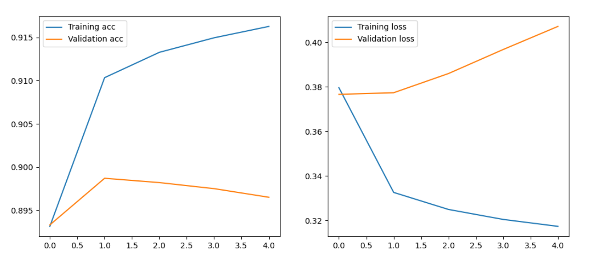
The diagram on the left shows the
training accuracyincreasing (which corresponds to the network learning to classify our training data better and better), whilevalidation accuracystarts to fall. The diagram on the right show thetraining lossandvalidation loss, you can see thetraining lossdecreasing (meaning its performing better) and thevalidation lossincreasing (meaning its performing worse). These graphs would indicate the model is overfitted.
Visualizing network weights
multiplying the initial image by a weight matrix allowing us to visualize the network weights with a bit of added logic.
1 | def visualize_weights(self): |
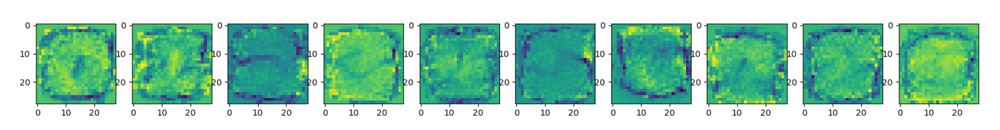
Training a multi-Layered perceptron
In a multi-layer network, we will add one or more hidden layers.
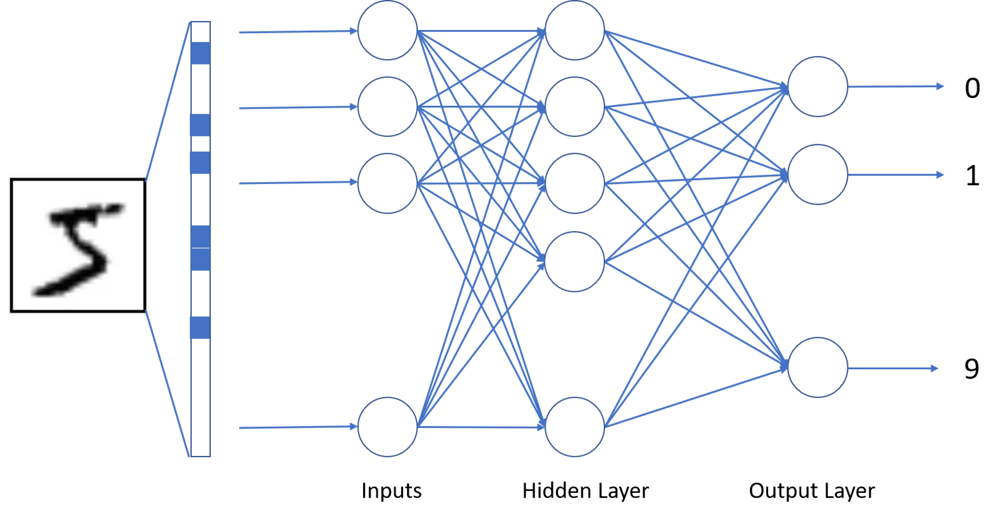
A number of parameters of a neural network should be chosen depending on the dataset size, to prevent overfitting.
there is the non-linear activation function layer, called ReLU. if a network consisted just of a series of linear layers, it would essentially be equivalent to one linear layer.
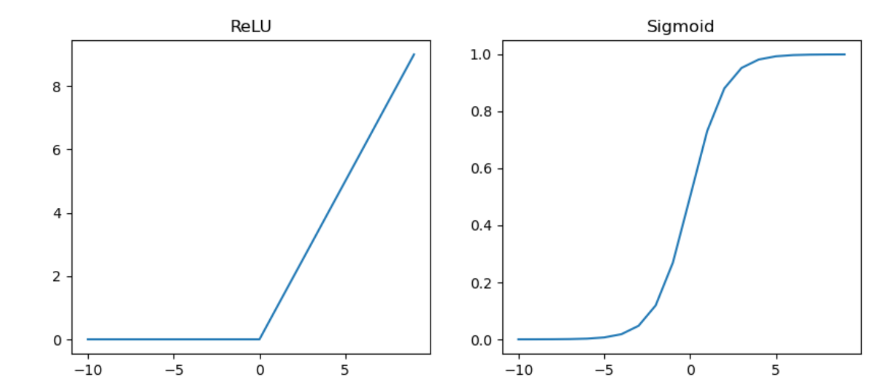
1 | relu_fn = torch.relu |
Network Definition
network layer structure:
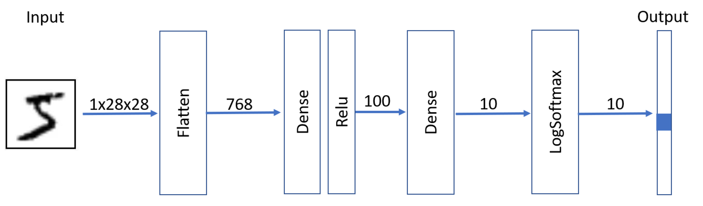
1 | net = nn.Sequential( |
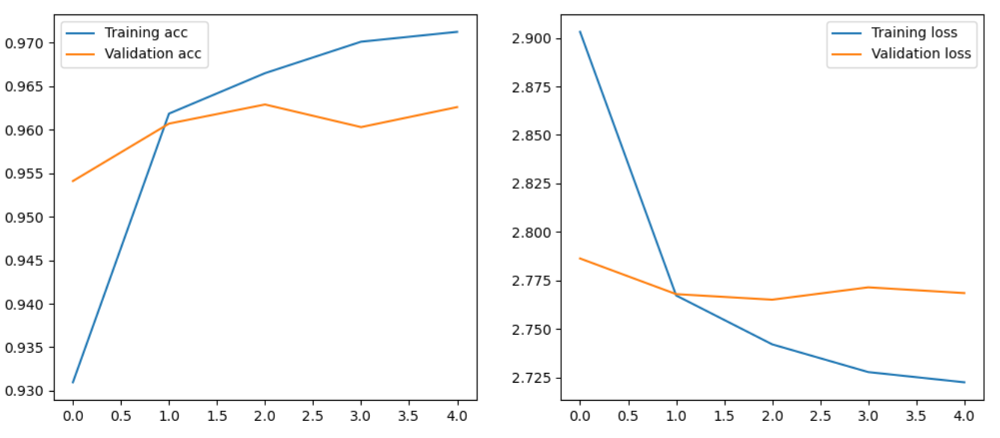
- This network is more expressive than the one layered perceptron we have trained in the previous unit. Thus it achieves a much higher training accuracy and given sufficiently large number of parameters - it can get to almost 100%
- Once the validation accuracy stops increasing - it means that the model has reached it's ability to generalize, and further training will likely to result in overfitting.
Class-based network definitions
Defining models using a Sequential style as a list of layers seems very convenient but it is somewhat limited. At some point you may need to define more complex networks, which contain shared weights, or some non-linear connections between layers.
1 | class ClassBasedNet(nn.Module): |
自定义神经网络由一个继承自
torch.nn.Module类的类来表示。类的定义包括两部分：
- 在构造函数（init）中，我们定义了我们的网络将拥有的所有层。这些层被存储为类的内部变量，PyTorch自动优化这些层的参数。在内部，PyTorch使用
parameters()方法来寻找所有可训练的参数，nn.Module自动从所有子模块中收集所有可训练的参数。- 定义了
forward method，对神经网络进行正向传递计算。在案例中，我们从一个参数tensor x开始，明确地通过所有的层和激活函数，从flatten开始，直到最后的线性层out。当我们通过写out = net(x)将我们的神经网络应用于一些输入数据x时，前向方法被调用。
convolutional neural network
we will learn about Convolutional Neural Networks (CNNs), which are specifically designed for computer vision.计算机视觉不同于一般的分类，因为当我们试图在图片中找到某个物体时，我们是在扫描图片，寻找一些特定的模式和它们的组合。例如，在寻找一只猫时，我们首先可能会寻找水平线，这可以形成胡须，然后胡须的某些组合可以告诉我们，这实际上是一张猫的照片。某些图案的相对位置和存在是重要的，而不是它们在图像上的确切位置。
Convolutional filters
Convolutional filters are small windows that run over each pixel of the image and compute weighted average of the neighboring pixels.They are defined by matrices of weight coefficients. Let's see the examples of applying two different convolutional filters over our MNIST handwritten digits:
1 | def plot_convolution(training_data, kernel, title=""): |
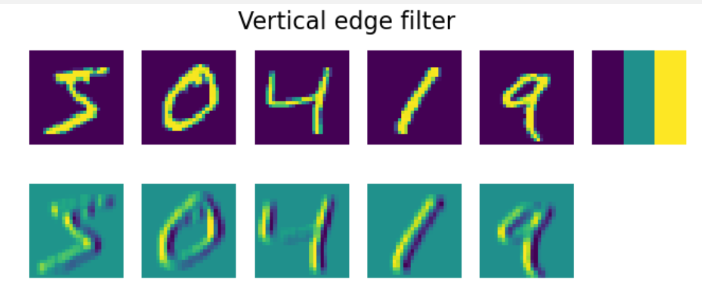
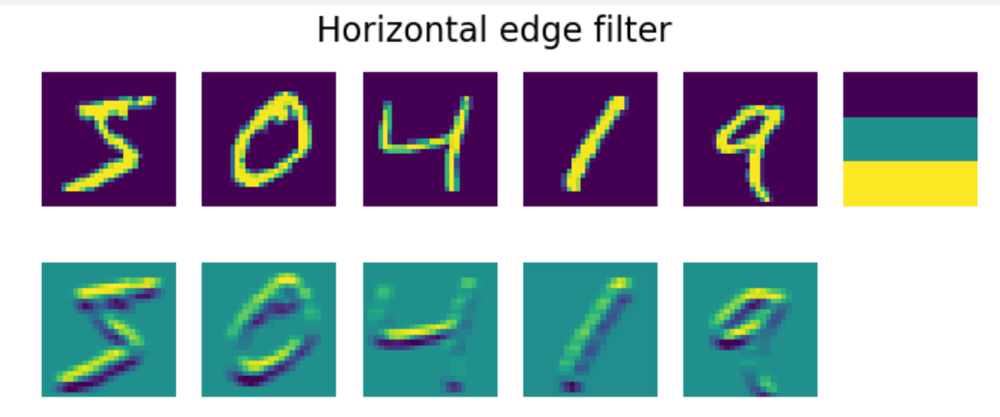
vertical edge filter: $$ (
\[\begin{matrix} -1 & 0 & 1 \\ -1 & 0 & 1 \\ -1 & 0 & 1 \end{matrix}\]) $$
Covolutional layers
Convolutional layers are defined using
nn.Conv2dconstruction:
in_channels- number of input channels. In our case we are dealing with a grayscale image, thus number of input channels is 1.out_channels- number of filters to use. We will use 9 different filters, which will give the network plenty of opportunities to explore which filters work best for our scenario.kernel_sizeis the size of the sliding window. Usually 3x3 or 5x5 filters are used.
Simplest CNN contains one convolutional layer.
Given the input size 28x28, applying nine 5x5 filters
end up with a tensor of 9x24x24 (there are only 24 positions where a sliding interval of length 5 can fit into 28 pixels).
flatten 9x24x24 tensor into one vector of size 5184, and then add linear layer, to produce 10 classes. (use
reluactivation function in between layers.)
1 | class SimplestConv(nn.Module): |
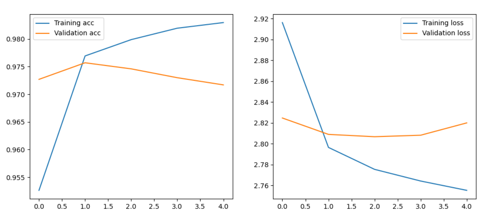
visualize the weights of our trained convolutional layers, to try and make some more sense of what is going on:
1 | def visualize_weights(self): |
Multi-layered CNNs and pooling layers
reducing the spatial size of the image："scale down" the size of the image, which is done using one of the pooling layers:
- Average Pooling takes a sliding window (for example, 2x2 pixels) and computes an average of values within the window
- Max Pooling replaces the window with the maximum value. The idea behind max pooling is to detect a presence of a certain pattern within the sliding window.
in a typical CNN there would be several convolutional layers, with pooling layers in between them to decrease dimensions of the image. We would also increase the number of filters, because as patterns become more advanced - there are more possible interesting combinations that we need to be looking for.
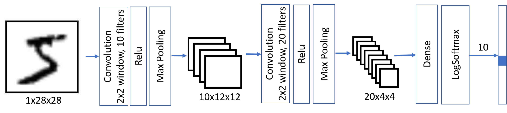
1 | class MultiLayerCNN(nn.Module): |
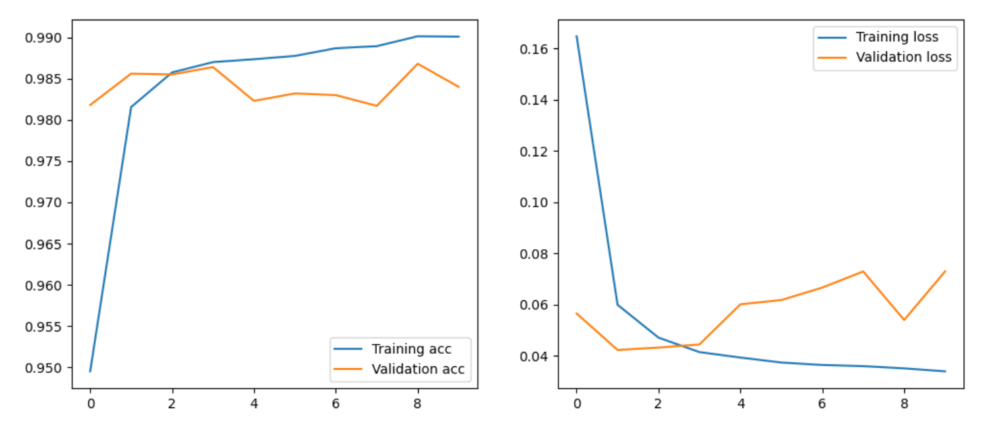
Playing with real images from the CIFAR-10 dataset
1 | def plot_dataset(dataset): |
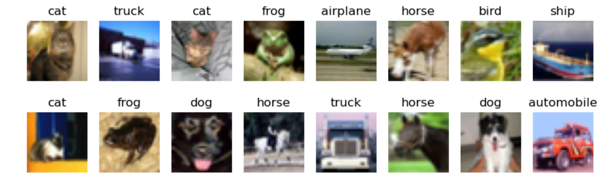
A well-known architecture for CIFAR-10 is called LeNet, and has been proposed by Yann LeCun. It follows the same principles as we have outlined above, the main difference being 3 input color channels instead of 1.
We also do one more simplification to this model - we do not use
log_softmaxas output activation function, and just return the output of last fully-connected layer. In this case we can just useCrossEntropyLossloss function to optimize the model.
1 | class LeNet(nn.Module): |
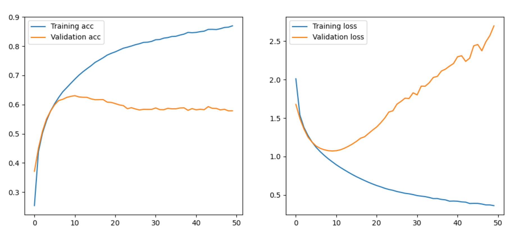
Pre-trained models and transfer learning
训练CNN可能需要很多时间，而且这项任务需要大量的数据。然而，大部分时间是用来学习网络用来从图像中提取模式的best low-level filters。
转移学习，将一些知识从一个神经网络模型转移到另一个。在迁移学习中，我们通常从一个预先训练好的模型开始，这个模型已经在一些大型图像数据集上训练过了，比如ImageNet。这些模型已经可以很好地从通用图像中提取不同的特征，在很多情况下，只要在这些提取的特征之上建立一个分类器就可以产生一个好的结果。
Playing with Cats vs. Dogs Dataset
solving a real-life problem of classifying images of cats and dogs. we will use Kaggle Cats vs. Dogs Dataset, which can also be downloaded from Microsoft.
1 | data_url = "https://download.microsoft.com/download/3/E/1/3E1C3F21-ECDB-4869-8368-6DEBA77B919F/kagglecatsanddogs_3367a.zip" |
load the images into PyTorch dataset, converting them to tensors and doing some normalization. We will apply
std_normalizetransform to bring images to the range expected by pre-trained VGG network:
1 | std_normalize = torchvision.transforms.Normalize(mean=[0.485, 0.456, 0.406],std=[0.229, 0.224, 0.225]) |
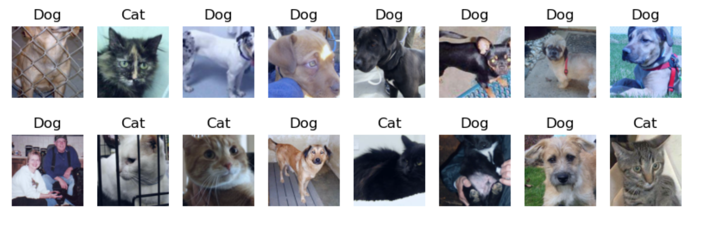
pre-trained models
There are many different pre-trained models available inside torchvision module, and even more models can be found on the Internet. Let's see how simplest VGG-16 model can be loaded and used:
1 | vgg = torchvision.models.vgg16(pretrained=True) |
DropOut: 正则化对学习算法做了轻微的修改，因此模型的泛化效果更好。在训练过程中，剔除层丢弃了前一层的某些比例（大约30%）的神经元，在没有它们的情况下进行训练。这有助于使优化过程脱离局部最小值，并在不同的神经路径之间分配决定性的力量，从而提高网络的整体稳定性。
Extracting VGG features
If we want to use VGG-16 to extract features from our images, we need the model without final classification layers. In fact, this "feature extractor" can be obtained using vgg.features method:
1 | res = vgg.features(sample_image).cpu() |
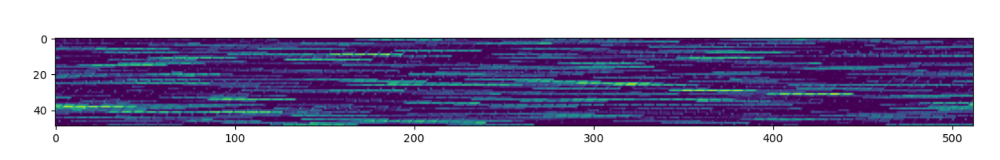
those features can be used to classify images. Let's manually take some portion of images (800 in our case), and pre-compute their feature vectors. store the result in one big tensor called feature_tensor, and also labels into label_tensor:
1 | def manual_feature_extraction(training_dataloader): |
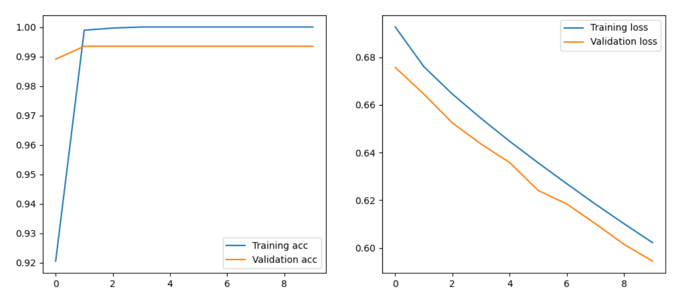
Transfer learning using one VGG network
the VGG contains:
- feature extractor (
features), comprised of a number of convolutional and pooling layers - average pooling layer (
avgpool) - final
classifier, consisting of several dense layers, which turns 25088 input features into 1000 classes (which is the number of classes in ImageNet)
To train the end-to-end model that will classify our dataset, we need to:
- replace the final classifier with the one that will produce required number of classes. In our case, we can use one
Linearlayer with 25088 inputs and 2 output neurons. - freeze weights of convolutional feature extractor, so that they are not trained. It is recommended to initially do this freezing, because otherwise untrained classifier layer can destroy the original pre-trained weights of convolutional extractor. Freezing weights can be accomplished by setting
requires_gradproperty of all parameters toFalse
1 | class TransferVgg16(nn.Module): |
this model contain around 15 million total parameters, but only 50k of them are trainable - those are the weights of classification layer.
1 | path = 'data/cats_dogs.pth' |
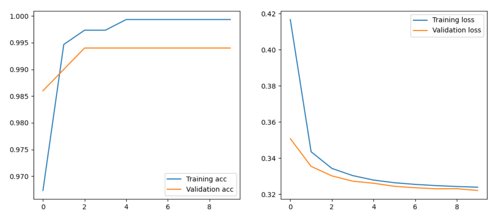
Fine-tuning transfer learning
In the previous section, we have trained the final classifier layer to classify images in our own dataset. However, we did not re-train the feature extractor, and our model relied on the features that the model has learned on ImageNet data. If your objects visually differ from ordinary ImageNet images, this combination of features might not work best. Thus it makes sense to start training convolutional layers as well.
we can unfreeze the convolutional filter parameters that we have previously frozen.
Other computer vision models
VGG-16 is one of the simplest computer vision architectures. torchvision package provides many more pre-trained networks. The most frequently used ones among those are ResNet architectures, developed by Microsoft, and Inception by Google.